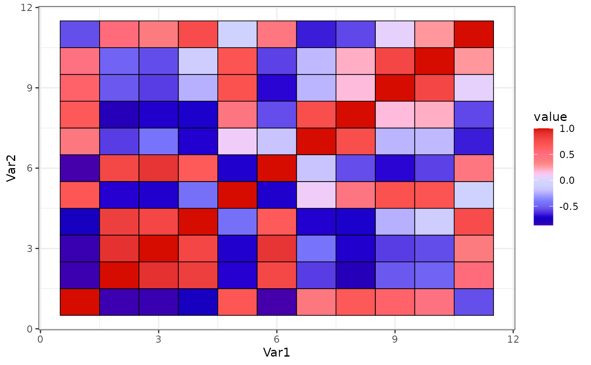

See pal_gsea() for details.
Arguments
- palette
Palette type. Currently there is one available option:
"default"(continuous palette with 12 base colors).- alpha
Transparency level, a real number in (0, 1]. See
alphaingrDevices::rgb()for details.- reverse
Logical. Should the order of the colors be reversed?
- ...
Additional parameters for
ggplot2::discrete_scale().
Author
Nan Xiao | me@nanx.me | https://nanx.me
Examples
library("ggplot2")
data("mtcars")
cor <- cor(mtcars)
cor_melt <- data.frame(
Var1 = rep(seq_len(nrow(cor)), times = ncol(cor)),
Var2 = rep(seq_len(ncol(cor)), each = nrow(cor)),
value = as.vector(cor)
)
ggplot(
cor_melt,
aes(x = Var1, y = Var2, fill = value)
) +
geom_tile(colour = "black", size = 0.3) +
theme_bw() +
scale_fill_gsea()
